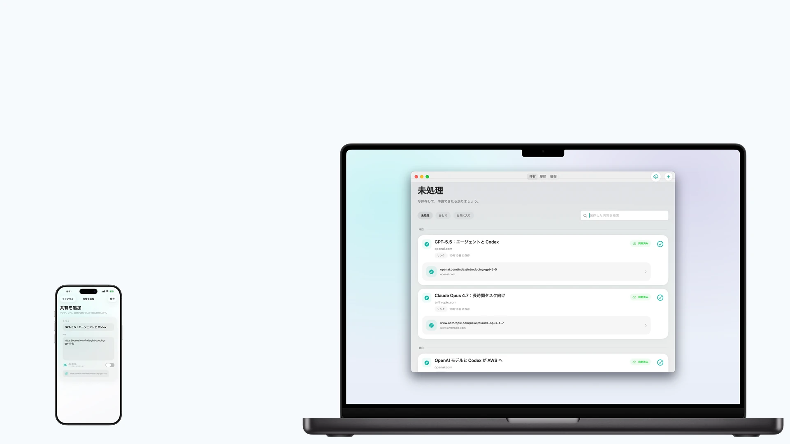
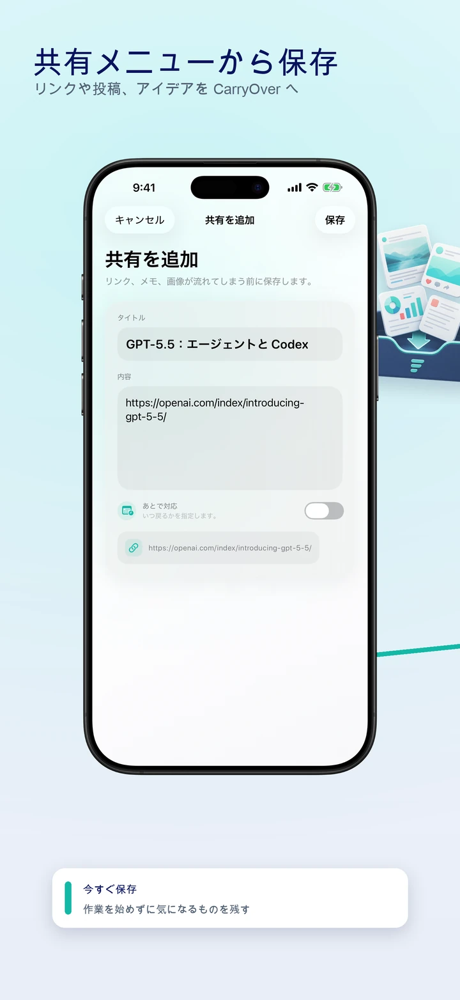
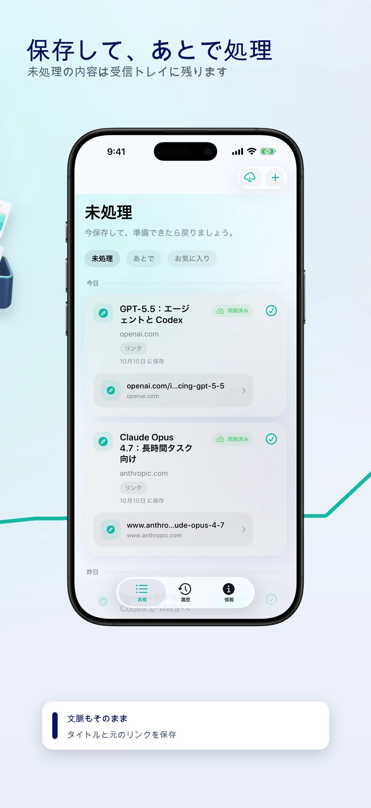
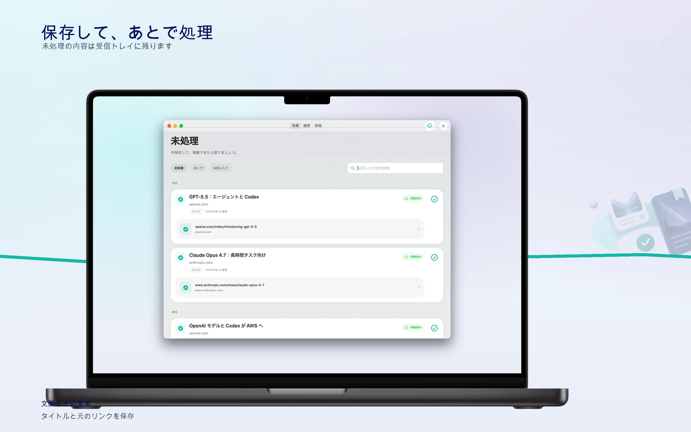

システム共有シート
Safari、メモ、SNS など共有に対応した App からリンクやテキストを保存できます。


リンクや投稿、アイデアを CarryOver へ

未処理の内容は受信トレイに残ります

元のページを開いて、処理を完了
Safari、メモ、SNS など共有に対応した App からリンクやテキストを保存できます。
共有テキスト内の URL を見つけ、元の文脈と一緒に保持します。
保存した項目を CloudKit で同期し、iPhone、iPad、Mac をそろえます。
未処理の内容は受信トレイに残ります
元のページを開いて、処理を完了
処理済みの内容は履歴に残ります